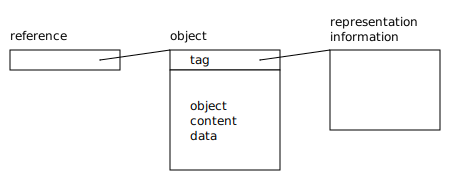
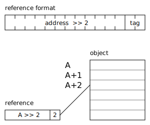
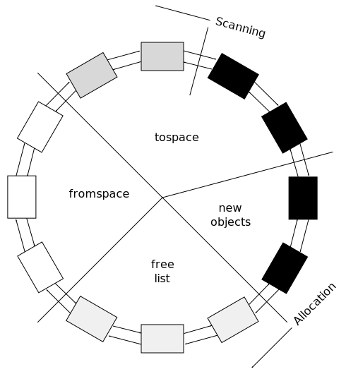

Memory Management Glossary: T¶
A | B | C | D | E | F | G | H | I | J | K | L | M | N | O | P | Q | R | S | T | U | V | W | X | Y | Z
- tabling
See
- tag
A tag is a piece of information associated with an object or reference that allows the representation of the object to be determined.
Tags are often used to represent types in the implementation of a dynamically-typed language. In statically-typed languages, types are usually implicit and not permitted to change at run-time, so tagging is rarely required.
One of the simplest forms of tag is a word at the beginning of the object that points to a block of information about the object’s format.
Example of a tag-word at the start of an object.
Another common form of tagging is to align objects and keep information in the least significant bits of the reference.
Example of reference tagging, with objects aligned to addresses that are multiples of four, and the tag stored in the least significant two bits of the reference.
In C, when a structure contains a union, it is common to add a field to the structure to indicate which union member is currently being used. This field is known as a discriminator, and is a form of tag. Analogues occur in other languages, sometimes with compiler or run-time support.
See also
In the MPS
See Tagged references.
- tagged architecture
A tagged architecture is a hardware architecture where each memory word is divided into a “data” and a tag section. The data section is sufficiently large to contain a memory address and the tag section is used to describe how the data section is to be interpreted (that is, it encodes the type of the data).
Relevance to memory management
Tagged architectures greatly simplify the implementation of a memory manager because each word of memory is self-describing.
Historical note
The Lisp Machine was an example of a tagged architecture.
- tagged reference
A reference containing a tag in part of its address, for example by aligning objects and keeping the tag in the least significant bits of the address.
In the MPS
See Tagged references.
- TB(1)
See
- TB(2)
- telemetry filter
In the MPS
A bitmap indicating which events the MPS should include in the telemetry stream. It can be read or changed by calling mps_telemetry_control().
- telemetry label
In the MPS
An indentifier representing a string, returned from mps_telemetry_intern(), that can be associated with certain addresses, and so appear in the telemetry stream attached to events concerning those addresses. See Telemetry.
- telemetry stream
In the MPS
A sequence of events reported by the MPS to assist with debugging and profiling. The events that appear in the stream can be configured by setting the telemetry filter. See Telemetry.
- tenuring
See
- terabyte
Also known as
TB.
A terabyte is 1024 gigabytes, or 1099511627776 bytes(1).
See byte(1) for general information on this and related quantities.
- termination
See
- thrash
A cache(2) is said to thrash when its miss rate is too high, and it spends most of its time servicing misses. Thrashing is bad for performance, particularly virtual memory thrashing, because the relative cost of a miss is so high: it may slow a machine down by a factor of a hundred or more.
Thrashing is typically caused by a process or system having a working set which is larger than its cache(1) or main memory. It may also be caused by a failure of cache policy. A system with an inflexible cache policy may thrash even when the working set is quite small.
For instance, a virtual memory system which has four megabytes of physical memory(1) but which has a working set of ten megabytes will thrash badly.
- thread
A thread of execution is a sequence of instructions that take place sequentially. In a multi-threaded program, multiple threads of execution operate in parallel, and are generally asynchronous with respect to each other.
Relevance to memory management
Access to shared resources such as memory management interface must be thread-safe. Each thread has its own control stack which may contain references to blocks on the heap.
In the MPS
Threads are represented by values of type mps_thr_t, created by calling mps_thread_reg(). In order for the MPS to find references on the control of the thread, the thread must be also be registered as a root by calling mps_root_create_reg(). See Threads.
- threatened set
See
- TLB
- to space
tospace Also known as
new space, newspace.
In copying garbage collection, the space to which live object are copied.
Opposite term
- trace
In tracing garbage collection, tracing is the process of following the graph from all roots to all reachable data.
Similar term
scan.
- tracing garbage collection
Tracing garbage collection is garbage collection based on reachability.
Tracing garbage collection relies on the fact that if an object is not reachable, there is no way the mutator could ever access it, and therefore it cannot be live. In each collection cycle, some or all of the objects are condemned and the graph is traced to find which of the condemned objects are reachable. Those that were not reachable may be reclaimed.
- translation buffer
translation lookaside buffer Also known as
, address translation cache, ATC, TB.
The translation lookaside buffer or address translation cache is small piece of associative memory(1) within a processor which caches part of the translation from virtual addresses to physical addresses.
In a virtual memory system there is a translation from virtual addresses to physical addresses. This translation can often be very large and complex and the data structures that implement the translation (often a page table) can be too large to store efficiently on the processor. Instead, a few elements of the translation are stored in the TLB; the processor can access the TLB extremely quickly. If a required translation for a particular virtual address is not present in the TLB then a TLB miss is taken and the address is resolved using the more general mechanism.
- transparent alias
transparent type In the MPS
In the MPS interface, a transparent type is an alias defined using typedef, and this is documented so that the client program can rely on that fact. For example, mps_addr_t is a transparent alias for void *. See Interface conventions.
Opposite terms
- transport
In a copying collector, transporting is preventing an object in the condemned set from being collected by copying it and adjusting the reference by which it was discovered to point to the new copy.
See also
- transport snap-out
See
- treadmill
Henry Baker devised an incremental non-moving garbage collector that uses a circular doubly-linked list, called the treadmill, to implement tri-color marking.
Every object is on the list. The list has four sections corresponding to colors. The black, gray and white sections are used for tri-color marking, and an additional off-white section is used for free(3) objects. The color of an object is changed by unlinking it from the list and relinking it to a different part of the list.
A treadmill. (Based on Jones (2012).)
- tri-color invariant
tri-colour invariant
tricolor invariant
tricolour invariant The term “tri-color invariant” is used to refer to any of a number of properties of a reference graph that are preserved throughout a tri-color marking algorithm to ensure the correctness.
There are two important ones: the strong tri-color invariant and the weak tri-color invariant. When people say “the tri-color invariant” they probably mean the strong one.
- tri-color marking
tri-colour marking
tricolor marking
tricolour marking Tri-color marking is a tracing garbage collection algorithm that assigns a color (black, white, or gray) to each node in the graph. It is basic to incremental garbage collection.
Initially all nodes are colored white. The distinguished root set is colored gray. The collector(2) proceeds to discover the reachable nodes by finding an edge from a gray node to a white node and coloring the white node gray. Hence each tracing step involves choosing a gray node and graying its white children.
When all the edges from a gray node lead only to other gray (or black) nodes, the node is colored black. When no gray nodes remain, the reachable part of the graph has been discovered and any nodes that are still white may be recycled.
The mutator is free to access any part of the graph and allocate new nodes while the collector(2) is determining the reachable nodes, provided the tri-color invariant is maintained, by changing the colors of the nodes affected, if necessary.
Historical note
“Tri-color marking” is the term used to describe an algorithm developed in 1975 by E. W. Dijkstra and others, as an exercise in proving cooperating programs correct. They chose as their problem a parallel garbage collector, with the intent of illustrating cooperating sequential processes with a large shared data space but minimal exclusion and synchronization constraints.
Although the algorithm developed in the paper is not necessarily the most efficient algorithm for a collector(1), it has been generally accepted to be correct: an important feature that not all garbage collectors can claim. A number of other garbage collection algorithms have been shown to be isomorphic to the tri-color marking algorithm and thus are also believed to be correct.
See also
- two-space collector
two space collector Also known as
semi-space collector.
A two-space collector(1) is a simple form of a copying garbage collector. The available memory(2) is divided into two halves, called semi-spaces. Objects are allocated in one semi-space until it is full. The reachable objects are then copied into the other semi-space (usually using a Cheney scan) and the old semi-space is reclaimed. Allocation continues in the new semi-space until it is full, at which point the process is repeated in reverse.
The main disadvantage of a two-space collector is that it only makes use of half of the available memory. This can be tolerable in a virtual memory system if the garbage collector is written carefully to preserve locality of reference. Other forms of copying garbage collector, such as generational garbage collectors, have much lower overheads.

Two-space collector.
See also
flip.
- type-accurate garbage collection
- type punning
Interpreting a value of one type as if it were a value of another (for example, via a type cast in C), especially if such interpretation is not defined by the language standard. For example, interpreting a value of type T** (pointer to pointer to T) as U** is undefined.
In the MPS

Previous topic
Next topic
Downloads
MPS Kit release 1.111.0
All MPS Kit releases
Issues
Known issues
Issues fixed in release 1.111.0